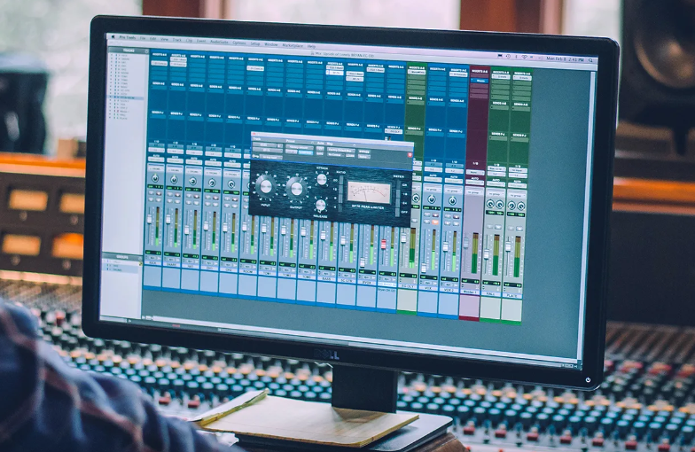
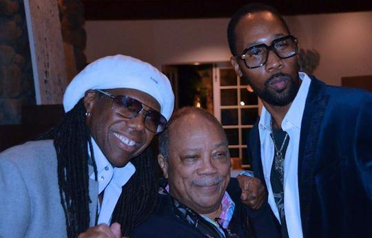

| ¿qué es la producción musical? |
- La producción musical es el proceso de preproducción, creación y perfeccionamiento de una canción o pieza sonora grabada para su difusión pública.
- Este trabajo abarca desde la escritura y composición hasta la grabación, diseño de sonido, mezcla y masterización.
 |
|
| ¿Qué hace un productor musical? |
- El productor define la concepción musical del proyecto y coordina su realización. Cuando es contratado por una discográfica, trabaja como intermediario entre este último y el artista. Cuando es autónomo profesional, media la relación entre el artista y el mercado, o entre este último y las disqueras que puedan estar interesadas en contratarlo.
- el productor musical también puede ser conocido como productor discográfico o productor ejecutivo, siendo el responsable de refinar una canción, elegir armonías y buscar soluciones interesantes con sentido comercial o de estilo para el artista con el que colabora.
 |
|
| Productores musicales famosos |
- Quincy Jones
- Responsable de la producción de clásicos de la música mundial como los álbumes Off The Wall, Thriller y Bad de Michael Jackson
- Nile Rodgers
- Famoso por colaborar con Mick Jagger, Madonna, Diana Ross y Daft Punk
 |
|